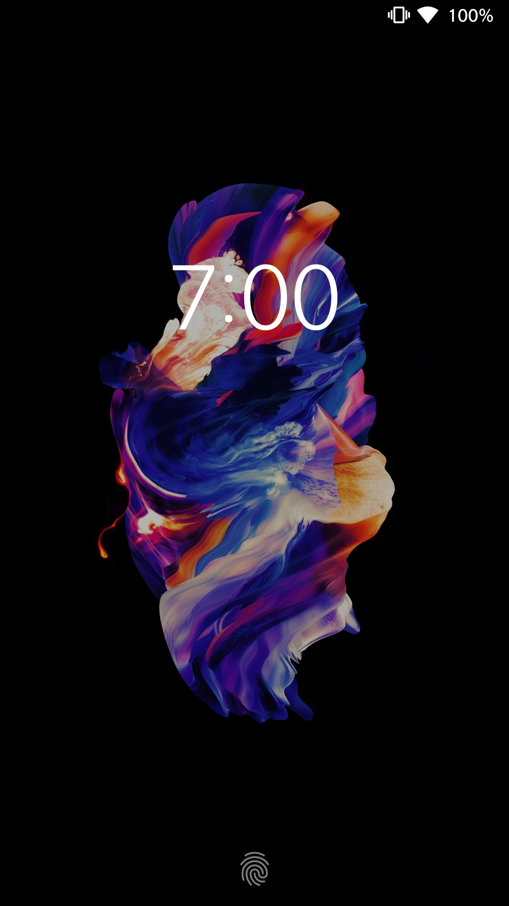
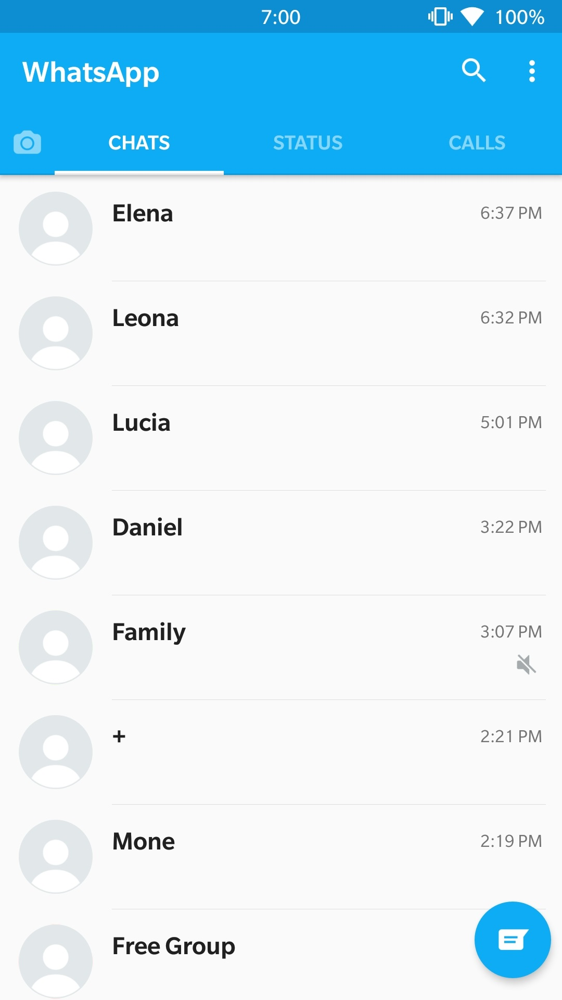
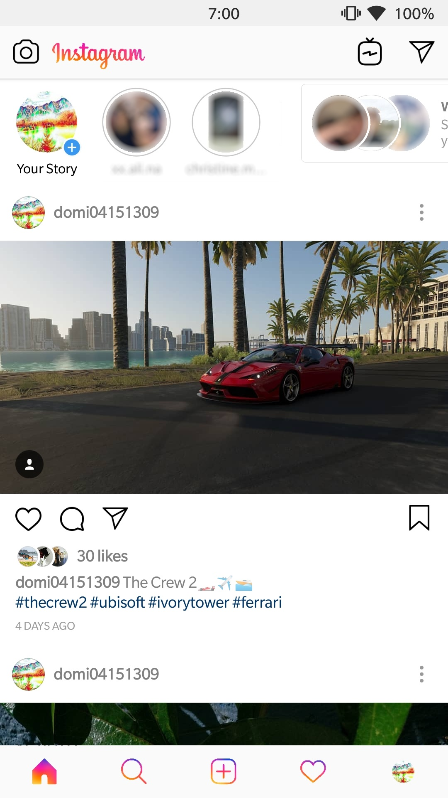
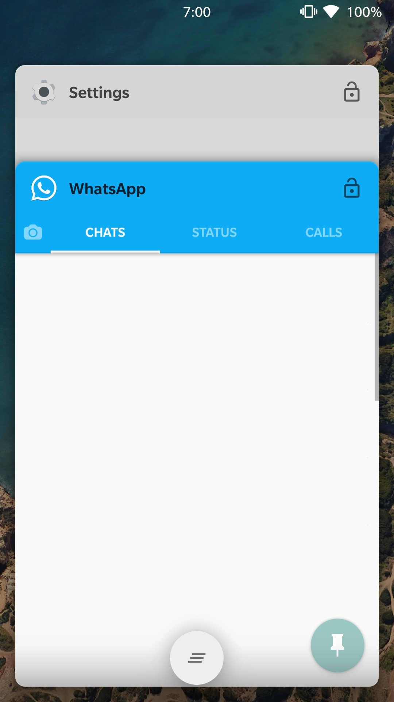

AMOLDED Custom is a Substratum theme for your Android device.
It includes colorful overlays for popular and mainly black system app overlays, so you save a lot of battery on OLED and AMOLED screens.
Link to Substratum
Link to Android Studio
Theme download only on request
   